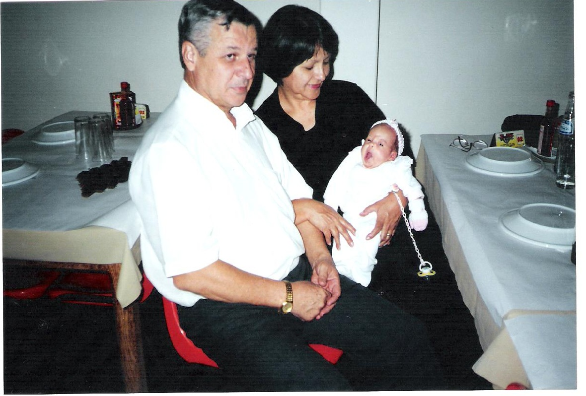

Ana Júlia...
Há 15 anos você nascia, para ser mais exata, no dia 26/03/2001, segunda-feira às 12:00h , trazendo muita alegria a toda família!!!Primeira neta paterna e materna, primeira bisneta, primeira sobrinha e uma filha muito esperada com um amor imenso... Sempre rodeada de carinho e cuidados por todos, mas, papai e vovó Lourdes sempre zelaram muito por você, visto que, mamãe ainda trabalhava, os tios sempre apaixonados pela “Aninha” deles, enfim amor foi o maior ingrediente no crescimento da nossa menina.Aos quase 4 anos recebeu com muito amor e cuidado seu irmãozinho e para sempre maior amigo Lucas, e até hoje assim o são, sendo um para o outro e para nós excelentes companhias!!!
À Deus só temos que agradecer e lhe entregar mais uma vez, para que coberta com o manto Sagrado de Nossa Senhora, sua vida continue sendo rodeada de bons amigos,muita paz, saúde, fé em todos os momentos e a família sempre presente em tudo!!!
Te amamos incondicionalmente!!!!
Papai,mamãe e Lucas.
